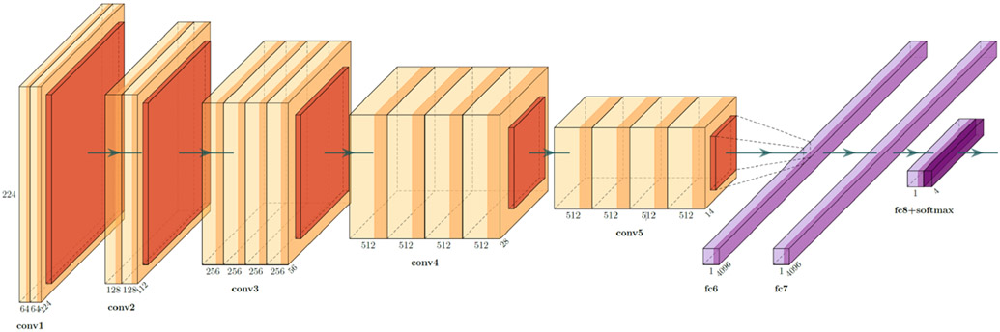

ImpressionismCat Tutorials
Neural Style Transfer
Background
In fine art, especially painting, humans have mastered the skill to create unique visual experiences through composing a complex interplay between the content and style of an image. Thus far the algorithmic basis of this process is unknown and there exists no artificial system with similar capabilities. However, in other key areas of visual perception such as object and face recognition near-human performance was recently demonstrated by a class of biologically inspired vision models called Deep Neural Networks. Here we introduce an artificial system based on a Deep Neural Network that creates artistic images of high perceptual quality. The system uses neural representations to separate and recombine content and style of arbitrary images, providing a neural algorithm for the creation of artistic images. Moreover, in light of the striking similarities between performance-optimised artificial neural networks and biological vision, our work offers a path forward to an algorithmic understanding of how humans create and perceive artistic imagery. (A Neural Algorithm of Artistic Style)
Make it happen!
First, import ImpressionismCat to your workspace like Jupyter Notebook. To do a neural style transfer art, you need two images at least:
A content image, some you would like to present as the content.
A style image, such as an artwork by a famous artist.
In the tutorial, we use a Volvo C40 as the content image and The Great Wave off Kanagawa as the style image.
Note
The Volvo C40 is an battery electric subcompact luxury crossover SUV with a sloping roofline manufactured by Volvo Cars, which was released on 2 March 2021. It is also the first Volvo model that is only available as a battery electric vehicle.
The Great Wave off Kanagawa (Japanese: 神奈川沖浪裏, Hepburn: Kanagawa-oki Nami Ura, lit. “Under the Wave off Kanagawa”) is a woodblock print that was made by Japanese ukiyo-e artist Hokusai, probably in late 1831 during the Edo period of Japanese history. The print depicts three boats moving through a storm-tossed sea with a large wave forming a spiral in the centre and Mount Fuji visible in the background.
import impressionismcat as ic
path_content = 'img/c40_recharge.jpg'
path_style = 'img/great_wave.jpg'
Secondly, we initialize a StyleTransfer Class as style. Before transfering the style, we check the inputs.
style = ic.paint.StyleTransfer(path_content, path_style)
style.show_inputs()
Now it’s time to do the transfer! We set 2000 iterations and output the result.
style.optimize(iterations=2000)
style.show_results()
ImpressionismCat provides function to generate a gif to record the transfer progress. Make it fun!
style.save_gif('style_greatWave.gif')